don`t worry, Be Happy !

|
|
don`t worry, Be Happy !
|
|
|
Путевые записки начинающего сноубордиста и зимнего
туриста
Закрытие сезона на Хамар-Дабане 7, 8, 9 мая 2005
В связи с неопытностью начинающего бордера, возможны неточные описания кулуаров и склонов, и вообще ситуаций разных... Угол зрения на окружающий экстремальный народ иногда бывает с иронией и подколками, но это от усталости. В общем-то настрой положительный и оптимистический, все бордеры и лыжники, зашедшие в горы - братья и сестры. И всем огромный привет !!! Особенно "Байкальскому Экстриму" !!! Накануне выхода доделал лопату-совок, испытаю в походе. Пропитал штормовые брюки и перчатки водоотталкивающей пропиткой. Зарядил запасные аккумуляторы. Гамаши сделаны были еще к Первомаю, и борд тоже был запарафинен, но тогда не сходил. Сборы прошли нормально, куль был забит, доска привязана, привычка появляется немного, собираюсь быстрее :) --------------------------------------------------------------------- день 1 - 7 мая 2005 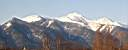 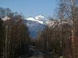 Немного остановился поправить коврик под бордом, догнали ребята из Улан-Удэ. Жалко я их не подождал, Вера место под рюкзак в машине забивала. Ладно, недалеко осталось. Ребята учесали вперед. 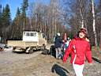 Заглянул в турбазовский коттедж, улан-удэнцы пьют чай, тоже собираются. Радушно встретились с еще одной старой знакомой, Оксаной Залесовой, все еще вспоминает фотопленки, которые я давным-давно "зажал", а она видеозапись с Соболинки. Это в прошлом были косячки. Двинул передовой отряд УУ - Сергей Лавина и двое молодых парней. Подъехала иномарка, раздали спрей от клещей, рекламная акция. Взял один для папы. Иркутяне понабрали и опять начали брызгаться. Жигуленок привез Костю Буркова, он пошел порыбачить вверх по Снежной. Ну и я с ним двинул, поговорили по дороге. Иркутяне потянулись тоже. По дороге от Верблюжке до ручья - то сугробы, то земля. Но дорога ровная, тропа протоптана, иду по следам и не проваливаюсь. На ручье воды нет, один снег. Облегчил одежды, надел фонарики, перекусил печеньем со снегом. Догнали улан-удэнцы и иркутяне, и пошли дальше. А дальше за ручьем уже не дорога - петляет тропа, лежат бревна, цепляются ветки. Впереди идущие уже наделали дыр в тропе. Иду нормально, даже хорошо, ведь рассчитывал на тропежку по пояс. Спасибо ребятам, сходившим на Первомай, потропили. Тропа вышла к ручью с водой, рядом прижим. Отсюда начинается подъем. Народ здесь останавливается, заправляется водичкой, отдыхает, знакомится. Подруга Веры, Настя, тоже из "РИФа", меня помнит, а я что-то не очень, кажется на фестивале ее видел. В общем, из всех сегодняшних УУ-заходчиков - трое знакомых - Вера, Оксана и Настя. А парни все на альп-сборы уехали. Переговорили, выяснилось, что все ребята из УУ состоят в федерации экстремальных видов спорта и путешествий республики Бурятия, а неофициально и проще - "Байкальский Экстрим". Я у них давно уже на сайте был, почти год назад, когда искал инфу про Тальцинский. Ну и на фотах видел Ксюшин фэйс. Она там вице-президент! во как ... Сколько энергии в этой маленькой женщине, уму не постижимо, не в каждом мужике столько. 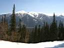 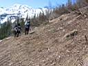 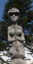 Слова уважаемого и легендарного экстремала меня убедили, тем более что девчонки пообещали помочь с установкой палатки на снег. Сам на снег я ни разу не ставил. Копать не пришлось, рядом было ровное свободное место, правда там раньше 2-хместная стояла, так что под мою 3хместную пришлось немного расширить место. Ставил сам, Настя помогла только с дугами и тентом. Фраза-шутка - "Парни, берите в поход женщин, они и палатку вам поставят, и накормят, и все понесут". В лагере был поставлен флаг Байкальского Экстрима - оранжевый с прикольным синим человечком, из которого "брызжет" белый адреналин :) (это я так думаю, что там на самом деле и почему - не спросил)... Была сначала мысля - завтра перейти с палаткой на верхнюю поляну, посмотреть, как там житуха. Все-таки с иркутянами надо тоже общаться, они же ближе по расстоянию. Но вспомнилось былое, душевность и веселость РИФа, старая походная дружба, и поганая мыслишка исчезла. Закинул вещи в палатку, постелил ковер, переоделся. Красота одному в палатке, места много! Ночевать все равно кто-то придет в гости, палаток у БЭ маловато в этот раз. Последнюю палатку принести два урбана - Вася и Костя, молодые и здоровые слонята, но слабые духом - заходят много дольше молодых девчонок. Ну и поставили они палатку еще хуже, чем я. Тамбур висит, дуги криво, тент не натянут, нормальный ветер сразу ее положит. Более опытные Артем и Чингиз посмотрели на это дело и, с подачи теток, попросились ко мне жить. В общем, получилось 4 палатки - Сергей Лавина и Ксюша вдвоем, тетки Вера и Настя с молодыми Светой и Ирой вчетвером, два урбана в своей кривой палатке, я, Чингиз и Артем в моей Накре-3 втроем. Палатки на разных уровнях, так как место лагеря на лесном склоне. 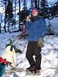 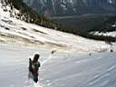 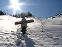 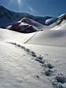 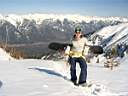 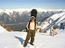 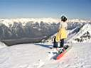
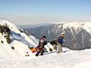 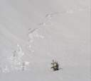 На ручье попили воды и пошли до лагеря. Взял котелок и бутылку, спустился на борде за водой. Решил потренироваться немного. Один черт падал, хоть и склон не крутой. Ладно, все уже мокрое, завтра весь день катания будет, потренируюсь еще, думал я, поднимаясь с котелком и бордом в лагерь. Если бы я знал, что завтра вечером будет на месте ручья - фиг бы по нему спускался и за водой ходил, лучше снег топить, чем в лавине лежать. 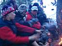 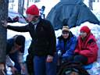 Особенно не понравились барагозы, пришедшие шумно по темноте, просящие помощи с установкой палатки и использования костра, в чем конечно не отказали. Но барагозы еще желали песен и пьяного веселья, чего у нас почему-то не было. Пришедший позже "командир" барагозов увел их в верхний лагерь, чему я лично был рад, да и остальные не сожалели. С барагозами были тетки-туристки, на последнем издыхании почти, а ведь им еще полчаса-час в гору по темноте и все ночь не спать.Еще ночью зашли иркутяне, что обнаружилось утром по новым палаткам выше лагеря. Экстремальному народу весенняя ночь в горах не помеха. Вот такие противоположные лагеря получились, нижний и верхний, пьяно-веселящийся и трезво-отдыхающий. Впрочем, вражды никакой не было, все друзья и ходили-заходили в гости поговорить. Даже в верхнем лагере, как рассказал позже один гость Тимоха (Антошка), получилось два одинаковых костра, одинаковые костровые ямы, только возле одного был народ матерящийся, а возле другого - не матерящийся. "Это тоже уважительная причина" - посчитали многие. В Байкальском Экстриме маты тоже пресекаются, мне даже сделали пару раз замечание - вырвалось. Костер у нас был не на большое количество народу, костер между большим камнем, на котором хранились продукты, и деревом, в которое упиралась палка тагана. Тем более на склоне. Верхняя снеговая сидушка кайфовала, а нижняя бревенчатая сидушка коптилась на дыму. Сбоку еще была длинная чурочка на два попера :) В общем, приходилось иногда постоять. 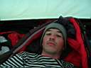 Продолжение следует ... (катуха, сэр :) ...
Май 2005. Белокрылов А.Ю. Слюдянка. |
Этот отчет был написан сразу после покатушек, на волне бурных чувств :) и потому очень подробный. Еще он был опубликован на сайте Байкальского Экстрима. 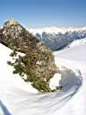 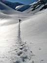 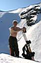
|